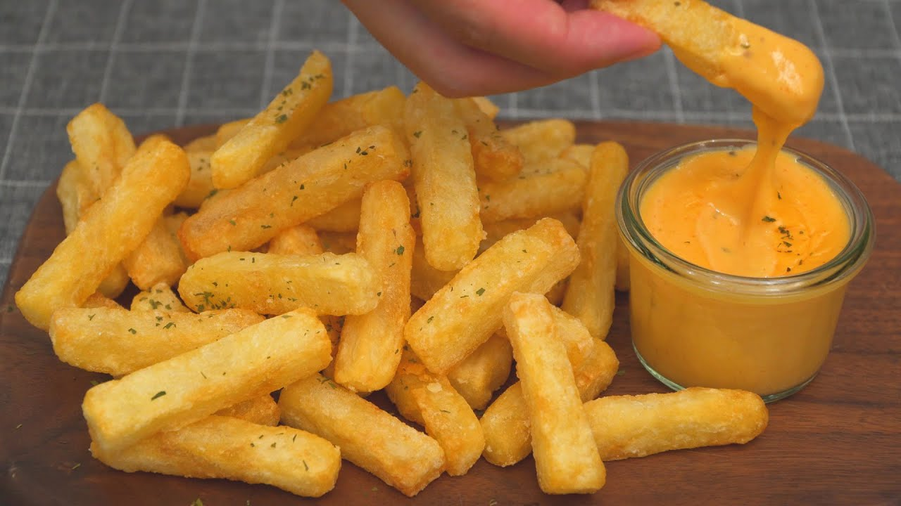

Crispy French Fries and Cheese Sauce

Description
Who doesn't love french fries? This dish was taken from the YT channel "Nino's Home".
It is based on Terrace Kitchen's recipe. It pairs crunchy soft french fries with a
slightly sweet and savory cheese dip. The dish is relatively simple to make,
mostly involving preparing the fries before frying. They are fried twice, making a crispy
outside with a soft center. This dish is a must!
Ingredients
- Potatoes
- Water
- Salt and Pepper
- Corn Starch
- Vegetable Oil
- Unsalted Butter
- Flour
- Chili Powder
- Milk
- Cheddar Cheese
- Sugar
Steps
- Peel the potatoes and then cut into strips of 1 - 1.5 cm thick
- Soak potatoes in bowl of water for 30 minutes
- Strain potatoes and wash a few times again with water
- Put water with a bit of salt onto the stove. Place all potatoes into the pot
- When it comes to a boil, wait 5 minutes for the potatoes to cook a bit more
- Strain the potatoes and spread on a tray to dry
- Place potatoes in a bowl. Pour 20g cornstarch and coat each potato strip
- Pour a generous amount of oil into a pan and place over the stove
- When the oil is hot, fry the potatoes on medium high heat
- Cook the potatoes for 5-8 minutes and then remove from the oil to spread evenly on a tray
- In a separate pan, heat up 20g of butter and then 5g of flour when the butter has melted
- Add in 1/4tsp of salt, 10g of sugar, and 1/4tsp of chili powder. Mix
- After stirring, add 100ml of milk and and a dash of pepper
- Put in 70g of cheddar cheese and mix until melted
- Place cheese sauce in a separate sauce bowl
- Refry the potatoes on high heat for 5 minutes
- Plate and enjoy!
Back To Recipes Page